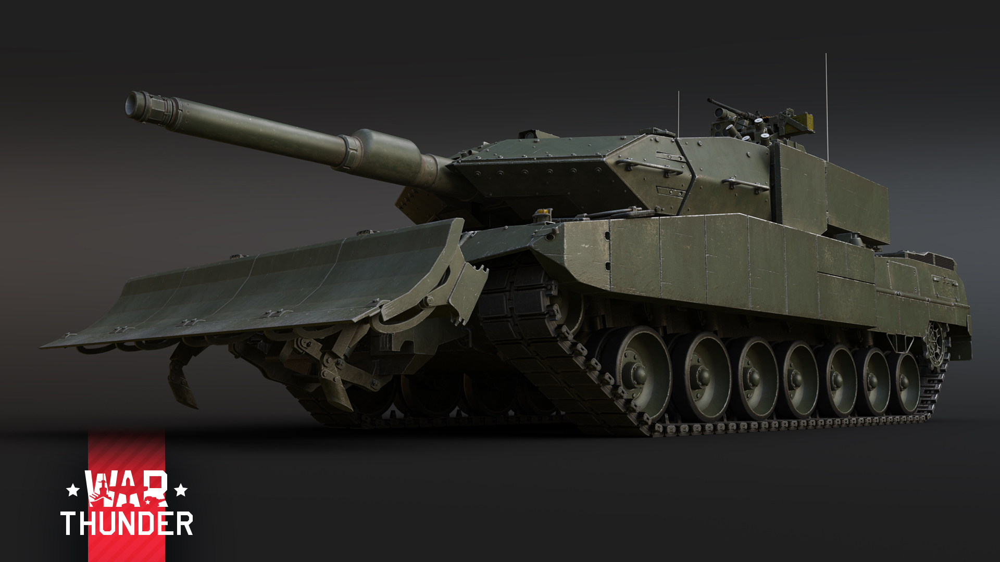
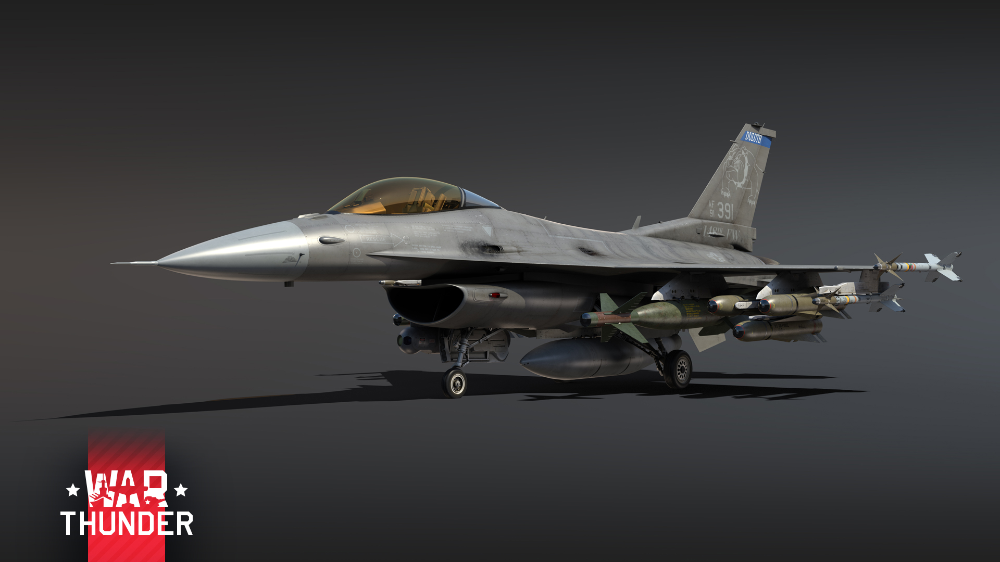
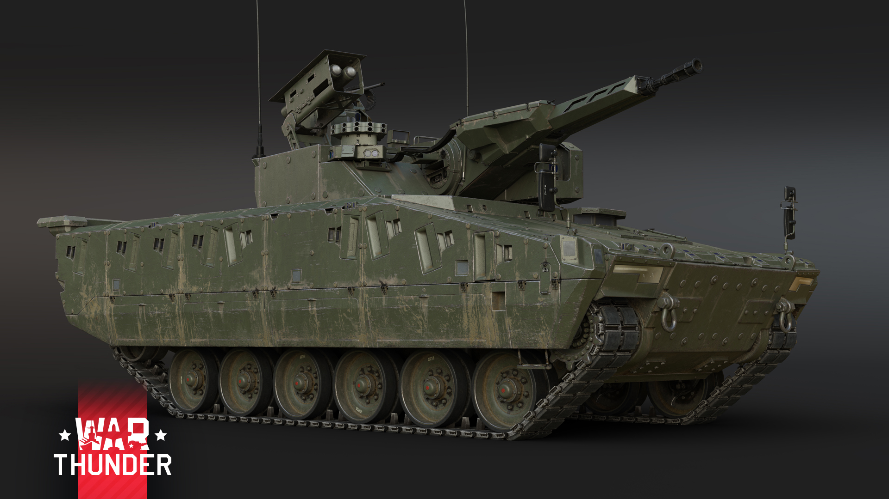

Leopard 2 PSO, Germany

Features :
- Additional armor - useful protection!
- Modern Fire Control System.
-
Upgraded engine to help compensate for the
additional armor.
- .50 Cal gun on the turret roof.
- Bulldozer blade.
The Leopard 2 PSO, with PSO standing for “Peace Support
Operations”, was KMW proactive development of the
Bundeswehrs requirements for a tank that needed to be
adapted for urban warfare peacekeeping operations. As a
result of this version, the Leopard 2 PSO features a
compact Euro-Powerpack engine, and has been equipped
with optional equipment, capable of being fitted for
whatever mission is at hand. The Leopard 2 PSO hull has
been equipped with additional armor modules on the sides
and on the turret, as well as reinforced underbody
protection. The modernization of Leopard 2 tanks under
the PSO program was first delayed and then eventually
abandoned in favor of upgrading tanks to the Leopard 2A7
specification.
Specifically designed for urban combat environments, the
Leopard 2 PSO features additional modules of armor that
have been added to the sides of the hull and turret —
which are typically the most vulnerable areas of the
Leopards armor layout. Thanks to the addition of this
extra protection, the Leopard 2 PSO will now have
increased survivability against shaped charge rounds, as
well as hits against autocannon fire. These additional
armor modules can also improve protection against
kinetic shells fired from other MBTs, but typically
kinetic shells will have no problem against this extra
protection!
Moving onto a more obvious part of the Leopard 2 PSO,
which is the large dozer blade that is located at the
front. The purpose of this dozer blade was to clear any
obstructions that the tank may face, and in the game,
will be able to move terrain around on the map — the
same as any other dozer blade. It also gives additional
protection, especially against shaped charged shells and
guided missiles!
Furthermore, in addition to new armor, the Leopard 2 PSO
received a Euro-Powerpack engine and a new transmission.
This has been added to help with the weight of the
additional added armor, and despite its higher HP, you
will not notice any improvements to the speed compared
to previous Leopard 2 versions. As for ammunition that
can be fired, the Leopard 2 PSO features a new, exciting
DM11 high-explosive shell to play with. And, as with
previous Leopard 2 variants that you are familiar with,
the Leopard 2 PSO features excellent shells and
firepower, a laser rangefinder, as well as thermal
imaging for the commander and gunner.
F-16C Block 50, USA

Features :
- 8 weapon hardpoints.
- Laser-guided bombs.
- Improved engine.
In the early 1990s, the first single-seat F-16C appeared
which was upgraded under the Block 50 program. This new
program saw the installation of a new General Electric
F110-GE-129 bypass engine, which featured increased
thrust when taking off and at low speeds, as well as a
new radar and updated avionics so that advanced weapons
could be used. F-16C Block 50s are still in service
today with the US, as well as foreign operators such as
Turkey and Greece
Courtesy of the Block 50 modernization program, the
F-16C is equipped with a brand new F110-GE-129 engine,
which in comparison to the well known F-16A, means the
F-16C will have an increase in thrust in static and
lower speeds. Furthermore, when approaching the speed of
sound, the thrust increase is proportional to the
overall mass of the F-16C. Because of this, while at
transonic and supersonic speeds, the performance of the
F-16C is equal to or just slightly superior to the F-16A
Block 15.
Moving onto what weaponry this further developed F-16C
has to offer. Thanks to 8 weapon hardpoints and a new
radar, the F-16C will ensure that you will have the best
weapons at your disposal. For air-to-air missiles, the
F-16C can carry the AIM-7 Sparrow air-to-air missile as
well as AIM-9L Sidewinders. In addition to this, the
F-16C can also carry conventional unguided weapons that
can be used against ground targets, which include
free-fall retarded bombs, incendiary bombs as well as
rockets — there is certainly plenty to choose from!
There are also exciting new laser-guided bombs, which
are currently not featured on F-16s in the game, thanks
to the addition of the LITENING II targeting pod.
Previous F-16 pilots will be glad to know that this
means two types of bombs — the GBU-12 Paveway II and
GBU-24 Paveway III — weighing 500 and 2,000 pounds
respectively, will be able to be carried on the F-16C.
Moreover, the F-16C can also carry AGM-65D Maverick
missiles, which are launched from a triple-rail pod.
KF41, Italy

Features :
- Deadly 30mm autocannon.
- Spike-LR ATGMs.
- Superb mobility.
- The Leopard.
The vehicle was first unveiled in its lighter KF31
configuration in June 2016 at the Eurosatory exhibition.
This debut was soon followed by the heavier KF41
variant, unveiled at the same event in 2018. By 2020,
Rheinmetall had entered negotiations with several
potential operators, including Australia, the Czech
Republic, and the United States. Hungary became the
KF41's first official operator in September of that
year, placing an order for 218 vehicles.
The KF41 comes equipped with a 30 mm MK 30-2/ABM
autocannon, which some tank commanders may already
recognize from the German Puma IFV. Infamous for its
deadly ballistics and steady rate of fire, the MK 30-2
is a versatile weapon, capable of punching through enemy
MBTs at close to medium distances but also downing
hostile aircraft with the right ammunition loaded. Apart
from the autocannon, the KF41 is also fitted with a
Spike-LR missile launcher. As a result of the missile
armament, the KF41 anti-tank capabilities are boosted
even further, being able to knock out even heavily
armored opponents at long engagement distances with its
tandem warhead ATGMs. Rounding off the KF41 arsenal is a
pair of machine guns, mounted coaxially as well as one
mounted in a remote-controlled turret on the roof.
While heavily armed, the KF41 still retains signature
characteristics of an IFV. Mobility is impressive, being
able to reach speeds of 75 km/h under ideal conditions.
Additionally, with a high power-to-weight ratio the KF41
can not only accelerate very quickly, but it can also
navigate treacherous terrain with ease. As a result,
commanders can easily perform flanking maneuvers or
relocate at a moments notice if ground is being lost to
the enemy.
Despite being an IFV, the KF41 features some serious
protection which most of its opponents should pay close
attention to. While the steel armor itself may only
suffice for stopping autocannons and shrapnel from
damaging the vehicle, its additional Rheinmetall ADS
active protection system can effectively destroy
incoming missiles. This coupled with the vehicles
excellent additional features which include RWR and high
quality thermal vision, significantly increase the odds
of the KF41 surviving an attack which was not initiated
by itself.